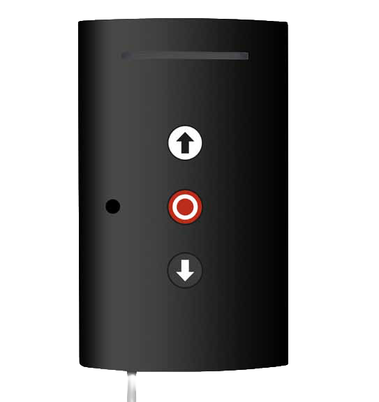

Wbudowane radio
Odbiornik 433,92 MHz pozwala uprościć konfigurację sterowania bezprzewodowego.
Sterowanie do bram rolowanych 230V.
Centrala sterująca do bram rolowanych z wbudowanym odbiornikiem radiowym 433,92 MHz oraz podświetleniem kurtuazyjnym.

QC201 jest przeznaczona do podstawowych instalacji bram rolowanych, w których liczy się proste sterowanie, odbiornik radiowy i praktyczne funkcje użytkowe.
Odbiornik 433,92 MHz pozwala uprościć konfigurację sterowania bezprzewodowego.
Dodatkowa funkcja poprawia wygodę użytkowania bramy po zmroku.
Klasa ochrony IP54 pozwala stosować centralę w typowych instalacjach bram rolowanych.
| Zasilanie | 230V |
|---|---|
| Moc napędu | do 800 W |
| Odbiornik radiowy | 433,92 MHz |
| Klasa ochrony | IP54 |
| Funkcje | Podświetlenie kurtuazyjne, sterowanie bramą rolowaną |
| Zastosowanie | Bramy rolowane |
Przekaż nam typ bramy i napędu. Pomożemy potwierdzić, czy QC201 będzie właściwym sterowaniem.